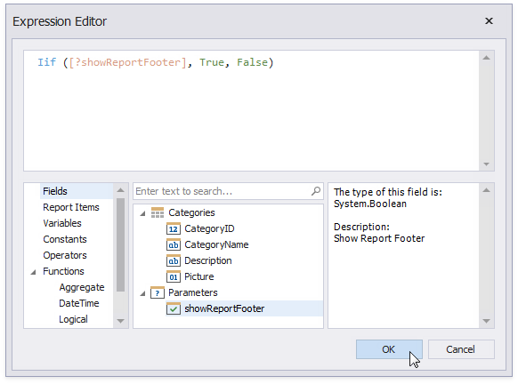
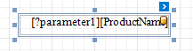
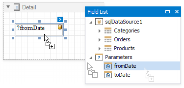
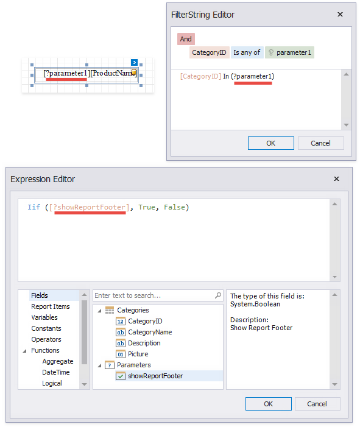

Use Report Parameters
Report parameters pass data to a report before it is generated in Preview. You can specify parameter values.
The topics in this section describe how to create report parameters of different types and specify their values:
- Create a Report Parameter
- Report Parameters with Predefined Static Values
- Report Parameters with Predefined Dynamic Values
- Multi-Value Report Parameters
- Cascading Report Parameters
- Date Range Report Parameters
Use report parameters in the following cases:
-
Report parameters can be referenced in a filter string.

Tip
Data can be filtered:
- On the report level. All data is loaded from the data source before a filter is applied.
- On the data source level. Only the filtered data is loaded. See Filter Data at the Data Source Level for more information.
In Expressions
You can create a report parameter and use it in expressions. For instance, you can do the following:
- Specify a calculated field's value.
- Bind a control to data.
Conditionally change a band's visibility or a control's appearance.

In Mail Merge
You can use a report parameter in a control's text.

As a Value Source for Control Parameters
The following controls have internal collections of parameters. You can bind these internal parameters to report parameters.
-
Use cross-tab parameters to filter data or change control appearance.
-
Filter chart data by parameters.
-
Use the control's parameters collection to specify parameter values in the report that the Subreport control references.
-
As a Value Source for Data Source Parameters
The following data sources have internal collections of parameters. You can bind these internal parameters to report parameters to make them dependent on an external value.
-
Use query parameters to filter data on the database level or pass values to a stored procedure.
-
Use path, query, and header parameters to configure HTTP requests to the web service endpoint.
-
Use object data source parameters to pass variables to the method that fetches data.
-
Use Entity Framework data source parameters to pass variables to the method that fetches data.
-
Display a Report Parameter Value in a Report Explicitly

Wherever you specify a parameter name, prefix it with the question mark character.
